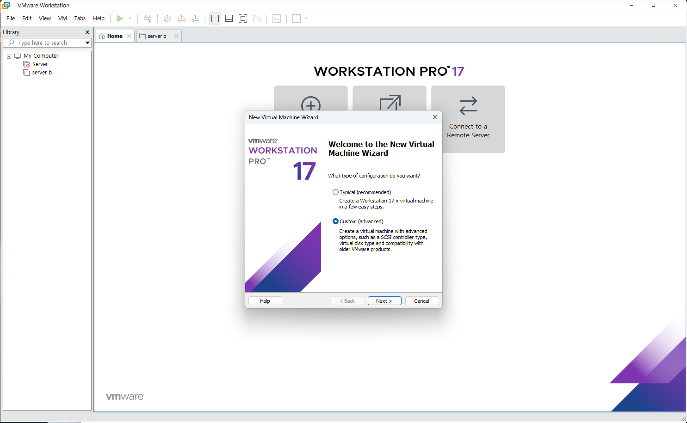
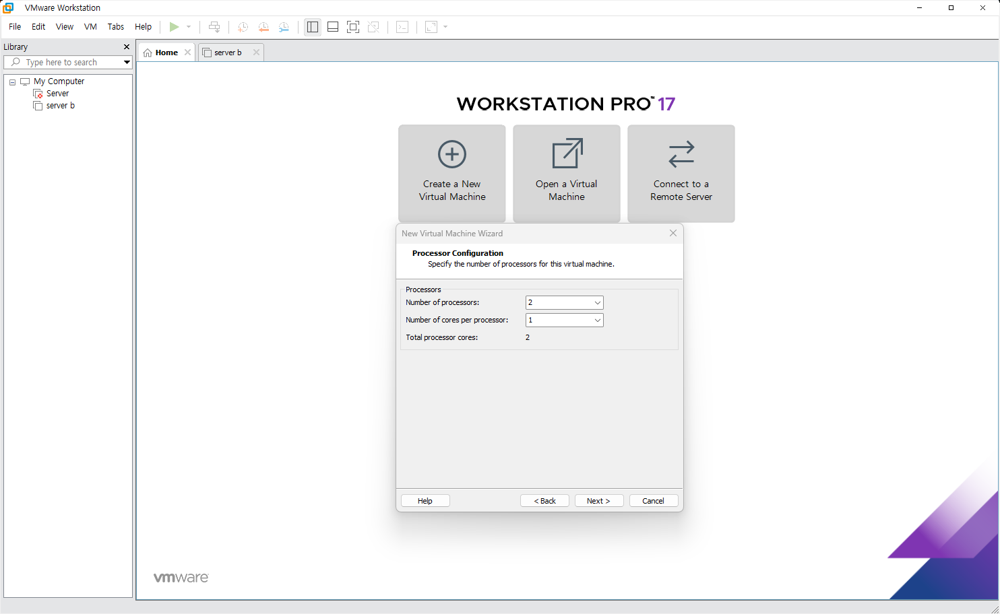
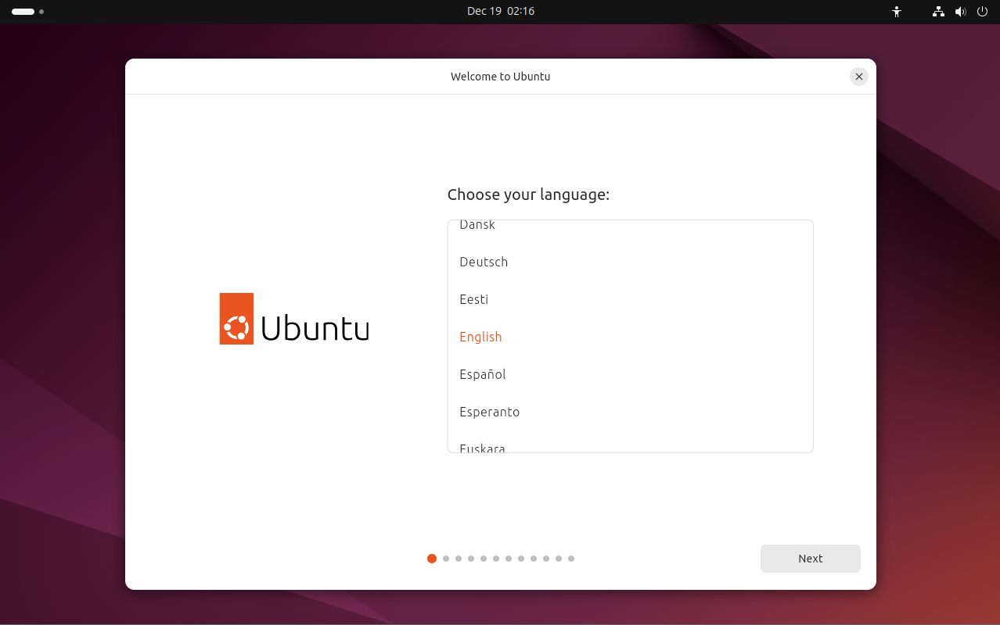

2. 설치 과정
기본적으로 계속 next하면 된다
 교육/실습은 1프로세서/2코어로 지정. 만약 서버용은 1프로세서/4코어

4096MB로 설정. 2048MB로 설정할 경우 우분투 설치 마지막에 프리징이 있을 수 있음.

가상 머신 설치 후 해당 머신 마우스 우클릭 후 setting 클릭

다운 받은 리눅스 ISO파일 설정 후 connect at power on 설정 클릭

Enter 후 계속 next하면 된다
원하는 언어 선택

사용 계정 생성

Enter 후 계속 next해가면 설치는 끝.